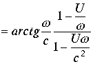
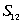

|
В. И. ЕЛИСЕЕВ ВВЕДЕНИЕ В МЕТОДЫ ТЕОРИИ
ФУНКЦИЙ ПРОСТРАНСТВЕННОГО КОМПЛЕКСНОГО ПЕРЕМЕННОГО |
|
3.4.2. Интервал в комплексном выражении
Преобразованную координатную матрицу запишем в выражениях комплексной пространственной алгебры. Левая часть соотношений (3.4.7) и (3.4.8) примет вид
|
(3.4.10.) |
По законам комплексной алгебры модуль комплекса (3.4.10) равен
|
(3.4.11.) |
Аргумент комплекса
|
(3.4.12.) |
Из модуля комплекса (3.4.11.) видно, квадрат модуля комплекса (3.4.10.) равен интервалу
|
(3.4.13.) |
Правая часть соотношений (3.4.7.) и (3.4.8.) даст комплекс
|
(3.4.14.) |
Модуль комплекса в этом случае равен
|
(3.4.15.) |
Подкоренное выражение дает квадраты интервала , так что сам интервал есть квадрат модуля комплекса . Аргумент комплекса
|
(3.4.16.) |
Таким образом, матрица координат теории относительности записывается как равенство комплексов в сферической системе координат.
|
(3.4.17.) |
Где определены по формулам (3.4.11.), (3.4.12.), (3.4.15.), (3.4.16.). Алгебра комплексного пространства утверждает равенство комплексов при равенстве их модулей и равенстве аргументов
|
(3.4.18.) |
В теории относительности оперируют только первым равенством. Отсутствие второго равенства обуславливает исследовать интервал в зависимости от соотношения параметров , и вводить название интервалам. Равенство аргументов комплексов координатной матрицы снимает эти ограничения. Рассмотрим как происходят исследования в теории относительности и покажем преимущество комплексной пространственной алгебры и геометрии комплексного пространства. Наличие комплексного аргумента определяет наличие изолированного направления в
четырехмерном пространстве. Координата времени повернута относительно пространственной координате на угол , так что пространственная и временная координаты имеют разные исходные точки в начале координат. В теории относительности этот факт отражается как разность знаков у квадратов временной и пространственной координате. Исследуем аргументы комплексов и условия теории относительности, которые были применены при выводе соотношений о сокращении времени и изменению длинны при переходе из одной инерциальной системы координат к другой. В аргументах выделим действительную и мнимую части. Представим . Применяя формулу 1.41, пункта 1.4 запишем|
(3.4.19.) |
В теории относительности исследуется простейший вариант, когда отсутствуют повороты в комплексной плоскости и . В этом случае
|
(3.4.20.) |
Величина в соответствии с формулой
1.41,при Аналогичные операции дают значение аргумента
|
 |
(3.4.21.) |
Таким образом, обе системы имеют действительные аргументы. При равенстве интервалов должно соблюдаться равенство аргументов
|
(3.4.22.) |
В результате комплексы
, запишем в виде|
(3.4.23.) |
, где аргумент
,а аргумент
Условия теории относительности  обращают в ноль знаменатель дроби аргумента
обращают в ноль знаменатель дроби аргумента 
Числитель становится равным . При этом имеем В этом случае уголтакже равен . Это требование пространственной комплексной алгебры. Следовательно . Это соответствует записи координат в матричной форме теории относительности (3.4.8.) Равенство комплексов в этом случае приобретает вид
.
Преобразуем данное равенство.
Равенство означает проекцию системы отсчета на изолированную ось. Приравнивая мнимые части и вводя под знак радикала условия теории относительности , окончательно получим соотношение теории относительности для измерения длин отрезков.
|
(3.4.24.) |
Теория относительности утверждает, что сравнение длин отрезков происходит в системах отсчета для одновременных событий, при условии Интервал в этом случае равен , где -длинна отрезка. Конечный результат при матричном выражении координат систем отсчета может быть получен непосредственной подстановкой условий в выражение (3.4.7.) Таким образом, условия есть замена экспоненциальной функции
есть замена экспоненциальной функции
.
Если процесс локализован, когда события проходят в одной и той же точке, то существует система отсчета при  одна из координат интервала (3.4.7.) становится равной нулю
одна из координат интервала (3.4.7.) становится равной нулю  . Числитель дроби в правой части равенства (3.4.8.) становится равным
. Числитель дроби в правой части равенства (3.4.8.) становится равным
. В результате из (3.4.8.) имеем
|
(3.4.25.) |
Формула определяет замедление времени утверждает теория относительности.
Рассмотрим комплексную пространственную систему координат. При условии аргумент . Равенство аргументов комплексов дает
Из равенства комплексов получаем
.
Преобразуем это равенство
Вводя параметр окончательно получаем соотношение (3.4.25.)
Сопоставление математических операций, проведенных на базе алгебры комплексного пространственного переменного, с операциями координат, записанных в матричной форме, а также рассуждениями об интервале в теории относительности, показывает их тождественность.
Мини оглавление:
[0], [1.1.1, 1.1.2, 1.1.3, 1.1.4, 1.1.5, 1.1.6, 1.1.7, 1.1.8, 1.2, 1.2.1, 1.2.2, 1.2.2.a, 1.2.2.b, 1.2.2.c, 1.2.2.d, 1.2.2.e, 1.2.2.f, 1.2.2.g, 1.2.2.h, 1.2.3, 1.3.1, 1.3.2, 1.3.3, 1.3.4, 1.3.5, 1.3.6, 1.4.1, 1.4.2, 1.5, 1.6, 1.7.1, 1.7.2, 1.7.3.1, 1.7.3.2, 1.7.3.3, 1.7.4.1, 1.7.4.2, 1.8.1], [2.1, 2.2],[3.1, 3.2, 3.3, 3.4.1, 3.4.2, 3.4.3, 3.4.4, 3.4.5],[4.1, 4.2, 4.3, 4.4],[5.1, 5.1.Рис.52, 5.2, 5.3, 5.4, 5.4.Т1, 5.4.Т2, 5.4.Т3, 5.5.1, 5.5.2, 5.5.3, 5.5.4],[6.1.1, 6.1.2, 6.2.1, 6.2.2, 6.2.3, 6.2.4, 6.2.5, 6.3, 6.4.1, 6.4.2, 6.5.1, 6.5.2],[7.1, 7.2, 7.3, 7.4, 7.5, 7.6, 7.7.1, 7.7.2, 7.8.1, 7.8.2, 7.8.3, 7.9],[8.1, 8.2.1, 8.2.2, 8.3, 8.4, 8.5, 8.6, 8.6.T1, 8.7, 8.8.1, 8.8.2, 8.8.3, 8.9.1, 8.9.2, 8.9.3, 8.10, 8.10.T2, 8.10.T3],[9.1, 9.2, 9.3, Рис.88, 89, 90, 91, 92, 93, 94, 95, 96, 97, 98, 99, 100],[10.1, 10.2, 10.3, 10.4, 10.5, 10.6, 10.7, 10.8, 10.9, 10.10, 10.11, 10.12, 10.13, 10.14, 10.15.1, 10.15.2, 10.16.1, 10.16.2, 10.17, 10.18],[11]
Размещенный материал является электронной версией книги: © В.И.Елисеев, "Введение в методы теории функций пространственного комплексного переменного", изданной Центром научно-технического творчества молодежи Алгоритм. - М.:, НИАТ. - 1990. Шифр Д7-90/83308. в каталоге Государственной публичной научно-технической библиотеки. Сайт действует с 10 августа 1998.
E-mail: mathsru@gmail.com